Design + Build Proposal
Two tall arched windows light the performance room. Each is 54 inches wide with jambs that run straight up from the floor, capped by a true semicircle of 27 inch radius. The apex sits at 9 feet 7 inches above the floor, which puts the spring line, where the curve begins, at exactly 88 inches.
The geometry is unusually clean. Because the arc is a true semicircle, it leaves the jambs vertically at the spring line, so straight work runs floor to 88 inches and the curved work above meets it on a clean horizontal line, with no scribing against the jambs. The whole design follows from that one fact.
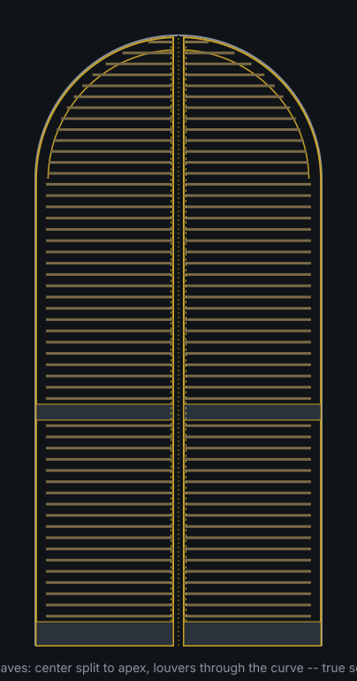
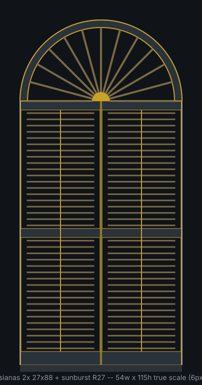
Window 2 is assumed identical to window 1 and will be field-verified before final frame sizing.
Each window gets two full-height hinged leaves that meet on the centerline and run all the way to the apex. Each leaf carries a quarter-arch top: the outer stile rises straight to the spring line, then a segmented walnut ring sweeps to the apex, while the center stile runs straight and full height so the pair closes against itself with a beaded astragal. The louvers do not stop at the curve. Twelve arch slats per leaf continue through it, each one progressively shorter, its curve-side end profiled concave to a 24-1/2 inch radius so it nests the ring at a uniform gap through the full tilt range.
Fifty slats per leaf, 200 across the project. A mid-rail divides each leaf into two louver banks that tilt independently, so the lower half can close for privacy while the upper half and the arch stay open to the light, or the entire window can shut down at once.
The frame is face-mounted: it sits on the interior wall, proud of the opening and tight against it, 2 inches deep with a 2-1/2 inch face. The window has essentially no sill, so the frame legs land directly on the floor and the curved head reproduces the window's arc exactly. Face-mounting is what lets an arch-top leaf swing; a leaf hinged inside the reveal would strike the arch soffit the moment it moved.
The louvers are driven by a hidden system: each slat carries a pivot pin on its centerline and a second drive pin at a 3/8 inch offset, the crank arm. A slotted aluminum strip rides captive in a groove in the center stile, offset forward of the pivot line so it clears the pivot pins, and slides about 5/8 inch to swing every slat together. Because the crank arm is identical on every slat, slat length is irrelevant: the 22 inch slats at the bottom and the short slats in the arch rotate in perfect unison. Working range is plus or minus 60 degrees, and the slats seal by overlap at about 56 degrees, so the mechanism never over-travels. Nothing is visible on the face of the shutter.
A traditional visible tilt rod with brass screw eyes, the system in the reference photo below, is available as an alternate. It reads correct for the Cuban style and costs about the same; the choice is purely aesthetic.
The material is solid American black walnut throughout, selected sapwood-free from a single batch so the color holds across 200 visible slats. Walnut is the right species for this build: dimensionally stable, stiff enough for 2-1/2 inch by 5/16 inch slats, and it machines and finishes cleanly. Slat stock is rift-sawn for straightness. Frames and rails come from 6/4 stock, the floor-standing legs from 10/4, and the arch rings are built up brick-fashion from staggered segments so the face grain follows the curve.
One honest expectation to set: walnut lightens in sunlight, the opposite of most species. These leaves will live in direct sun, so the finish is a matte hardwax oil with a UV protection package (Osmo UV-Protection over Polyx), which is repairable in place with no film to peel. Even so, the color will mellow toward honey over the years; a refresh coat on the sun side every year or two keeps it even. Steamed versus air-dried stock changes the depth of the color, and that call is made from physical samples before the lumber order.
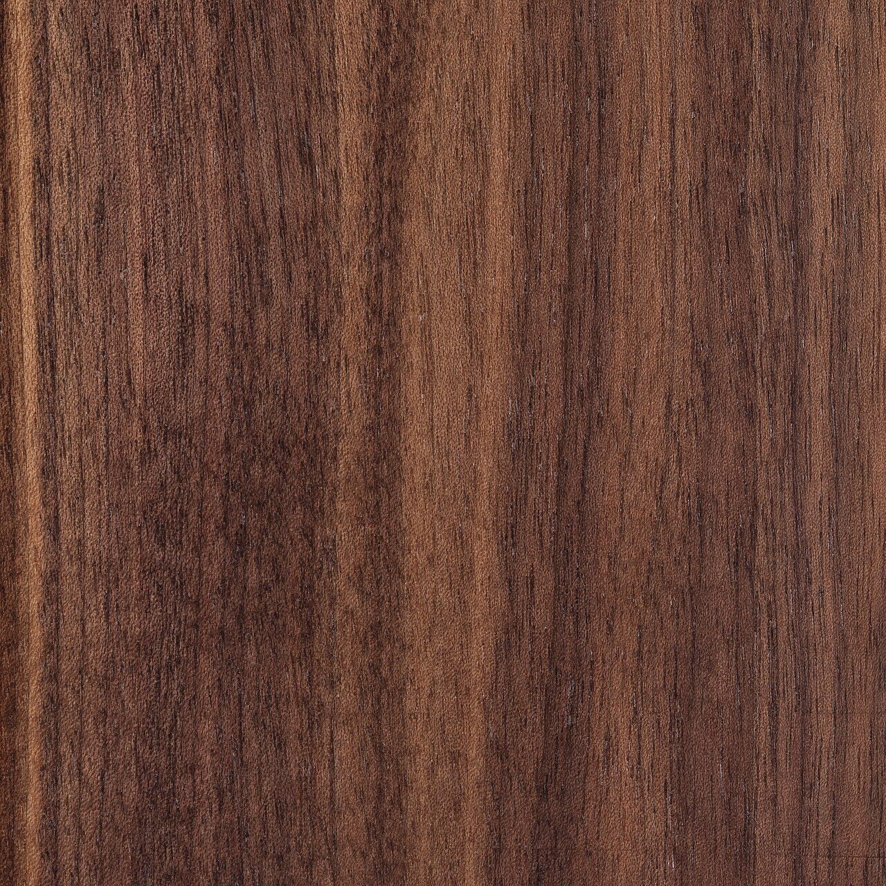
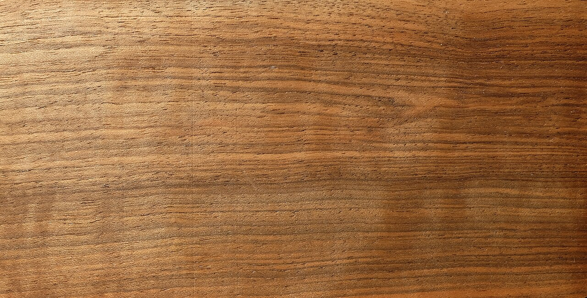
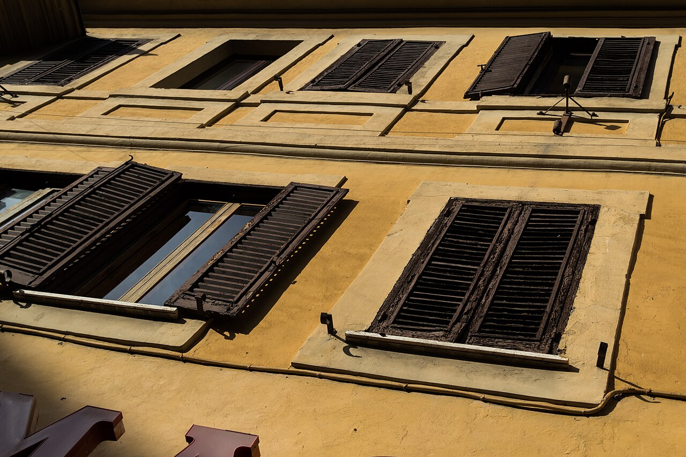
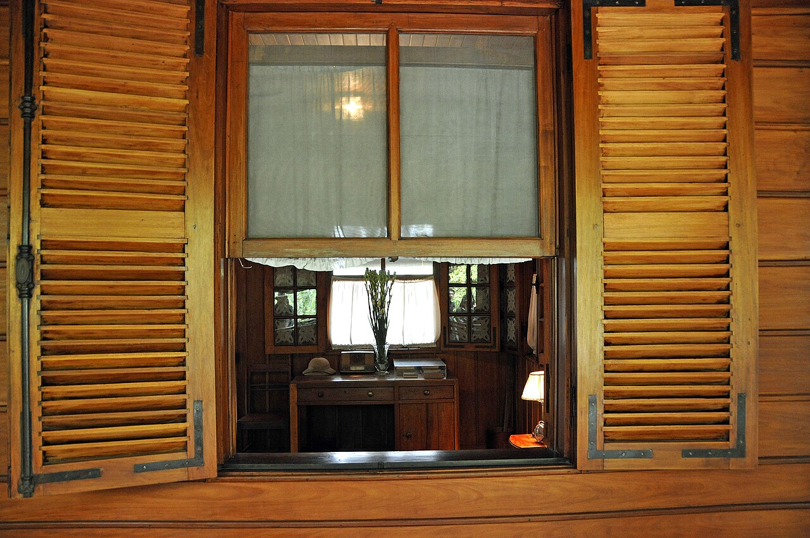
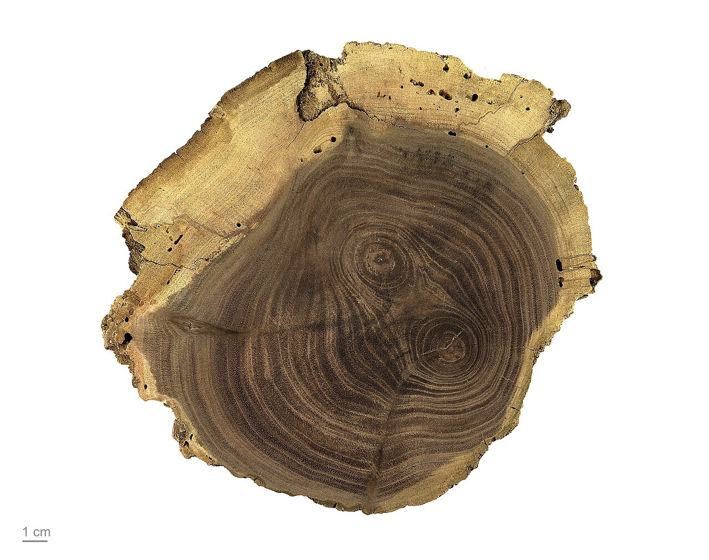
A fixed sunburst arch fan, the look in the clients' own reference photo, is offered as a decorative alternate and priced separately in section 06 below.
Both models are built from the same dimensioned solid as the shop drawings. Click a model to interact: drag to orbit, scroll to zoom.
One full window at final dimensions; the slider tilts all 100 louvers, arch slats included. Open full screen →
Sectioned working model of the hidden tilt strip: pivot pins, offset drive pins, and the sliding aluminum strip, cycling through the full tilt range. Open full screen →
Five sheets govern the build. Click any sheet to open it full size.
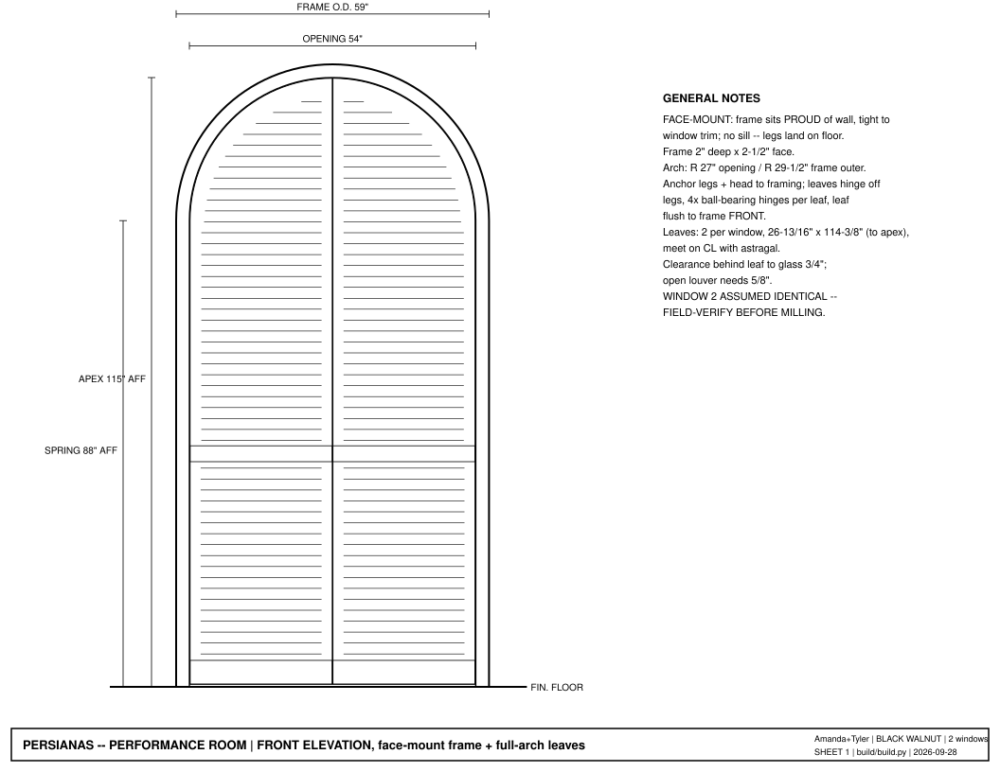
Sheet 1 · Front elevation, one window: frame, leaves, slat fields, and governing dimensions. Open →
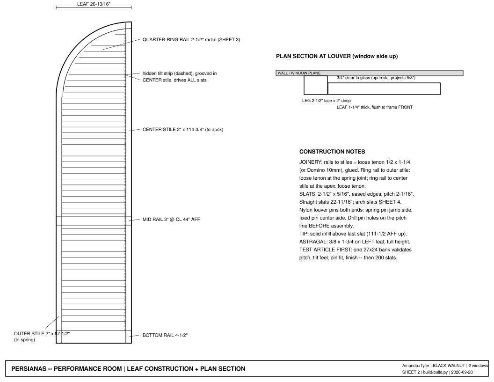
Sheet 2 · Leaf construction: stiles, rails, quarter-ring rail, joinery, and section. Open →
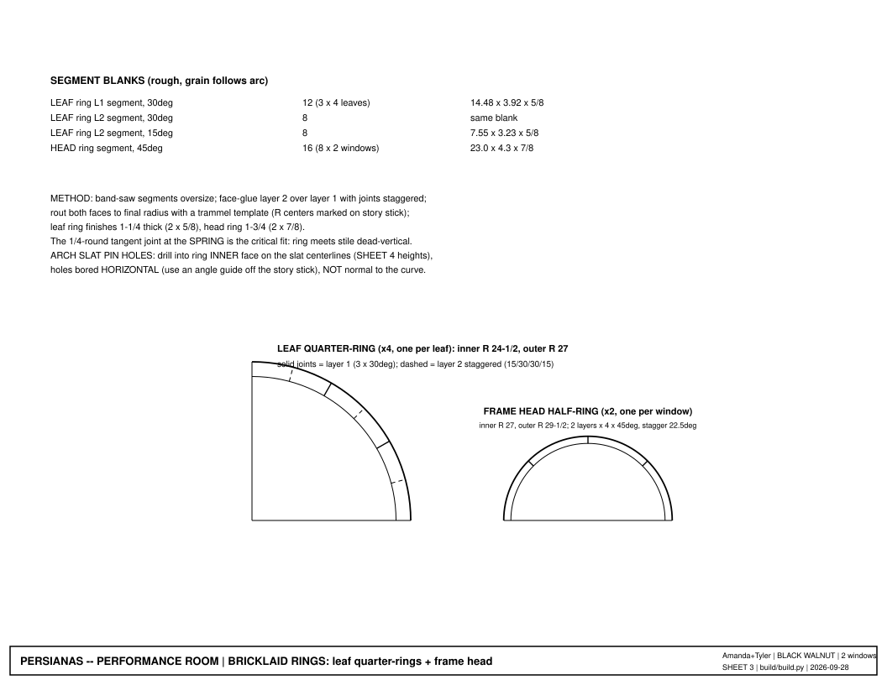
Sheet 3 · Bricklaid rings: staggered segment layup and template routing for the leaf and frame-head arcs. Open →
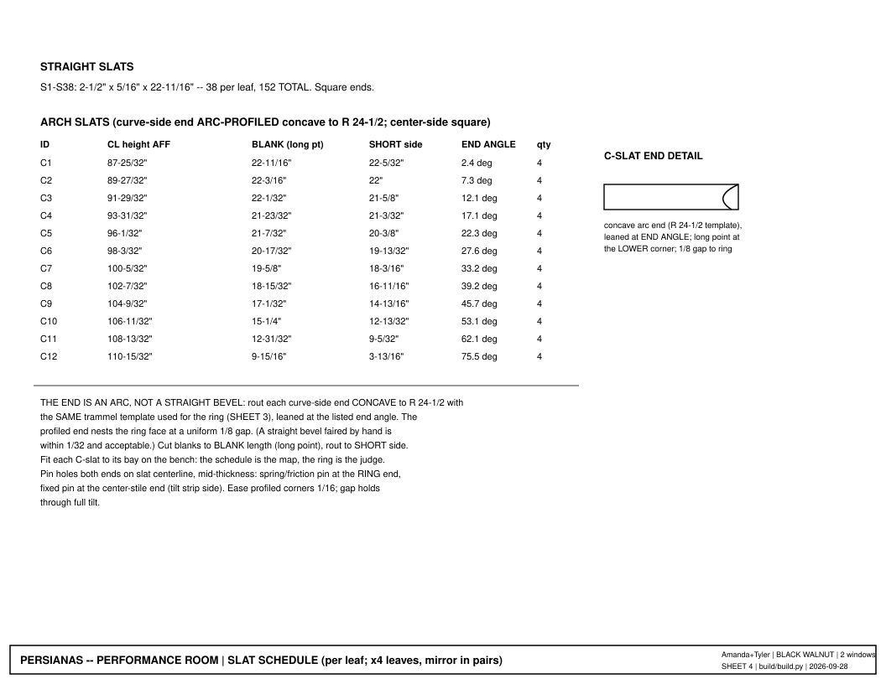
Sheet 4 · Slat schedule: the 152 straight slats and the full cutting schedule for the 48 arc-profiled arch slats. Open →
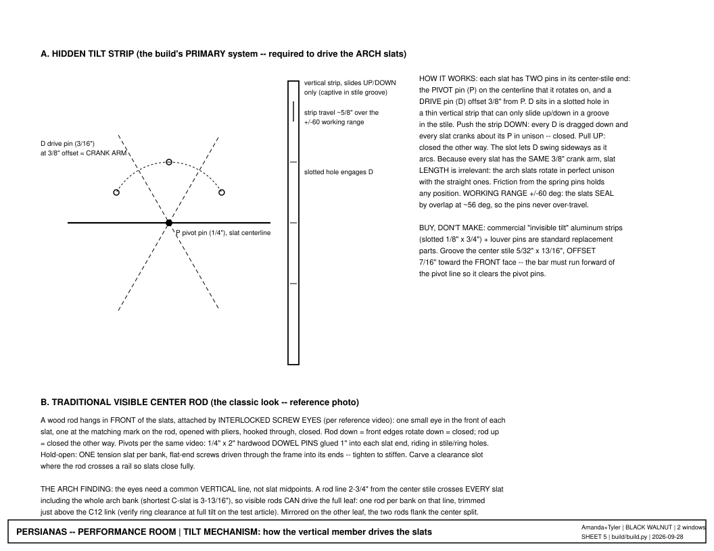
Sheet 5 · Tilt systems: the hidden strip (primary) and the visible rod alternate, with pin geometry and travel. Open →
Materials are priced from 2026 Los Angeles retail estimates with a 15 percent buffer for price drift and waste beyond the stated yield factors, plus California sales tax. Labor is an honest first-build takeoff for a custom shop, one skilled builder. All figures below are estimates until lumber is priced on the day of purchase.
| Item | Buy qty | $/bd ft | Ext | Basis |
|---|---|---|---|---|
| Black walnut 4/4 (slats, rift, sapwood-free) | 52 bd ft | $13.00 | $673.91 | net 23.6 bf x 2.2 yield |
| Black walnut 4/4 (ring segments, leaf + head) | 31 bd ft | $13.00 | $400.12 | net 15.4 bf x 2.0 yield |
| Black walnut 6/4 (stiles + rails) | 31 bd ft | $14.00 | $432.83 | net 20.6 bf x 1.5 yield |
| Black walnut 10/4 (frame legs) | 18 bd ft | $16.00 | $293.33 | net 12.2 bf x 1.5 yield |
| Black walnut 4/4 (astragal, rods, tips) | 4 bd ft | $13.00 | $56.74 | net 2.9 bf x 1.5 yield |
| Lumber subtotal | $1,856.93 |
| Item | Qty | Unit | Ext | Note |
|---|---|---|---|---|
| Ball-bearing butt hinges 3-1/2" ORB | 16 | $13.00 | $208.00 | 4 per leaf, face-mount frame; quality tier |
| Hidden tilt strips, slotted aluminum + pins | 4 | $30.00 | $120.00 | PRIMARY tilt system; ~50 stations per 88"+ leaf |
| Hardwood dowel 1/4" (pivot pins, cut to 2") | ~420 pins | $0.06 | $25.00 | incl. spares |
| Brass screw eyes #212 (rod-system option pool) | 1 box 100 | $12.00 | $12.00 | only if visible-rod alternate chosen; full need ~400 = +$36 |
| Flat-end steel screws (tension slats) | 16 + spares | $0.30 | $6.00 | 1 slat per bank, through-frame |
| Rare-earth magnet catches + strikes | 8 | $4.00 | $32.00 | top + bottom per leaf |
| Loose-tenon stock / Dominos 10mm | ~60 | $0.35 | $21.00 | rails, ring joints |
| Titebond III + epoxy (ring bricklay) | 1 + 1 | $25.00 | $45.00 | |
| Frame mounting screws, anchors + shims | lot | $35.00 | $35.00 | into studs/framing at legs + head |
| Osmo Polyx base x2 + UV-Protection Oil x2 | 4 x 750ml | $48.75 | $195.00 | ~500 sq ft coated surface, 2-3 coats; UV mandatory |
| Template/jig stock: MDF, hardboard, ply | lot | $100.00 | $100.00 | trammel ring templates, slat-end template, pin drill jigs |
| Abrasives, tack cloth, brushes | lot | $85.00 | $85.00 | 200 slats eat sandpaper |
| Lumber delivery allowance | 1 | $75.00 | $75.00 | 12-ft boards to the shop |
| Hardware subtotal | $959.00 |
| Materials subtotal | $2,815.93 |
| Padding 15% | $422.39 |
| Padded subtotal | $3,238.32 |
| CA sales tax @ 9.50% | $307.64 |
| Materials total (estimate) | $3,545.96 |
| Phase | Hours |
|---|---|
| Lumber selection, procurement, milling (134 bf; resaw + thickness 200 slats rift) | 24 |
| Templates + jigs (trammel ring templates, slat-end arc template, pin drill jigs, story sticks) | 7 |
| Test article: one 27 x 24 louver bank, evaluate + adjust | 5 |
| Bricklaid rings x6 (48 segments, staggered glue-ups, template-rout both faces, spring joints) | 16 |
| Leaf joinery x4 (M+T, tilt-strip grooves, ~100 jigged pin holes per leaf, glue-up square) | 36 |
| Arch slats: template-rout + fit 48 C-slats to their bays | 12 |
| Slat assembly: 200 slats pinned, tension slats, tilt strips + drive pins | 14 |
| Face-mount frames x2 (legs + head rings, joinery, assembly) | 8 |
| Sanding + finish, 2-3 coats hardwax oil (~500 sq ft, slats dominate) | 22 |
| Bench-hang: hinges, astragal, magnets, fit leaves to frames | 7 |
| Site install: anchor frames plumb, hang + adjust leaves | 10 |
| Project management, supplier runs, client comms | 5 |
| Total hours | 166 |
| Rate basis | $/hr | Labor total |
|---|---|---|
| Journeyman / side-shop | $85 | $14,110.00 |
| Custom shop (recommended) | $100 | $16,600.00 |
| Specialty shutter shop | $125 | $20,750.00 |
Hours are an honest first-build takeoff including jig development a factory would amortize. Envelope: $11,993.50 low to $23,862.50 high.
For scale: factory-made custom arch-top hardwood shutters run roughly $150 to $250+ per square foot installed, which is $13,000 to $21,000+ for this roughly 86 square foot scope. This proposal lands at the top of that band, which is where it belongs: not a factory product, but hand-built solid walnut at furniture grade, one-off, with the louvers running through the arch.
A second version of the arch, for consideration alongside the primary design. In this version the semicircular top of each window is filled by a fixed decorative fan: 13 tapered walnut rays radiating from a half-round hub, the hub centered at the spring line on the window centerline, rays landing on the outer arc at roughly 6-1/2 inch spacing, the whole fan set inside the same bricklaid half-ring. The leaves below are built as in the primary design, topped with a flat rail at the spring line instead of the quarter-arch.
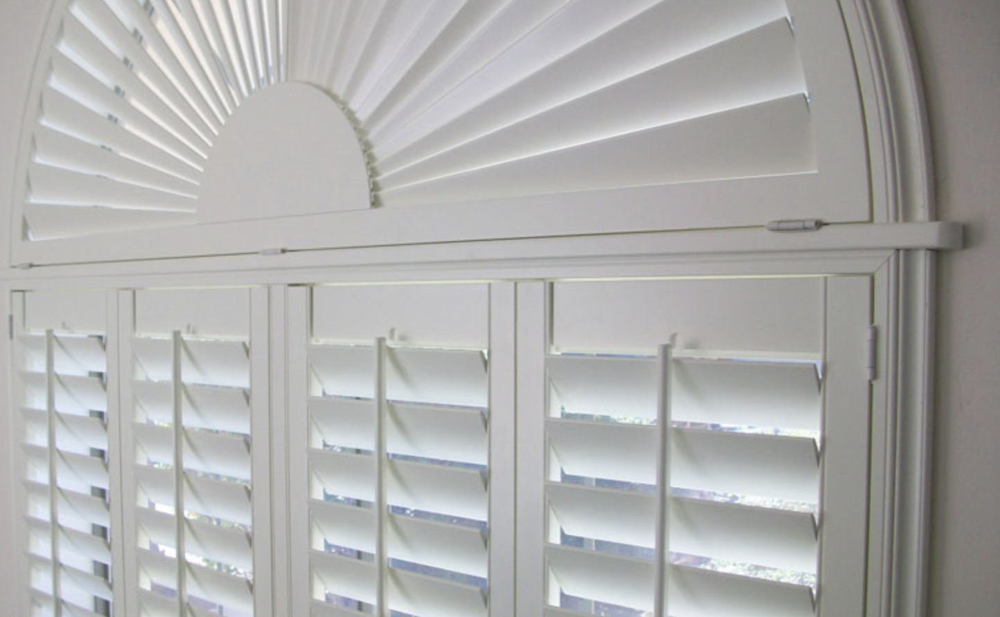
The honest constraint, stated plainly: a sunburst is fixed and cannot close. Its wedge rays do not rotate against each other, so the arch always passes light. Full light control at the arch comes only from the primary design's operable arch louvers. If the sunburst look and full blackout are both wanted, a concealed movable blackout arch cellular shade mounts behind the fan; it is a commercial custom item, estimated at $500 to $700 per window installed, to be verified before ordering.
| Item | Amount |
|---|---|
| Sunburst build: ~12 hrs per window (rays, hub, fitting, finish) | 24 hrs both |
| Credit for arch louvers omitted | ~ -16 hrs both |
| Net labor: +8 hrs @ $100 | +$800 |
| Additional walnut + padding/tax, both windows | ~ +$240 |
| Net alternate price over the base proposal, both windows (estimate; excludes the optional blackout shade) | ~ +$1,040 |
This is a build-time decision: the sunburst version tops the leaves with a flat rail at the spring line and fills the arch with the fixed fan, so the two versions differ in leaf construction and cannot be swapped later without rebuilding the leaf tops.
| Supplier | Area | Role on this project | Contact |
|---|---|---|---|
| House of Hardwood | 2414 S. Wellesley Ave, West LA (90064) | Primary for the FAS 4/4 slat and ring stock. Hand-selected black walnut boards and wide planks; grain-matched, sapwood-free selection matters most here. | 310-479-4196, Mon-Fri 7:30-4 |
| Bohnhoff Lumber Co | 3411 E. 26th St, Vernon | Primary for the 6/4 and 10/4 frame stock, and the volume and price check. Southern California's largest hardwood yard; allows hand-picking through pallets; delivers. | (323) 263-9361, weekdays 8:30-3 |
| Angel City Lumber | 251 S. Anderson St, Boyle Heights | Urban sawmill milling fallen Los Angeles trees; carries California black walnut slabs. A different species than Eastern black walnut, with wilder figure and slab-based availability. Worth a visit for feature stock, the sunburst rays and hubs or the astragal, with a story attached: wood from LA's own street trees. Not the volume source. | angelcitylumber.com, Mon-Sat 9-5 |
| Anderson Plywood | 4020 Sepulveda Blvd, Culver City | Sheet goods: A-grade walnut plywood in 1/4" and 1/2", and the MDF and ply for templates and jigs. | (310) 397-8229 |
Walnut inventory and pricing move constantly; call for the day's price and availability before the material order.
| Part | Qty | Final dims (T x W x L) | Stock | Notes |
|---|---|---|---|---|
| Outer stile | 4 | 1-1/4" x 2" x 87-1/2" | 6/4 walnut | floor to spring |
| Center stile | 4 | 1-1/4" x 2" x 114-3/8" | 6/4 walnut | full height to apex; groove for hidden tilt strip |
| Bottom rail | 4 | 1-1/4" x 4-1/2" x 25-5/16" | 6/4 walnut | incl 1-1/4 tenons both ends |
| Mid rail | 4 | 1-1/4" x 3" x 25-5/16" | 6/4 walnut | CL at 44" AFF, site-adjustable |
| Leaf ring segment 30 deg | 20 | 5/8 x 3.92 x 14.48 blank | 4/4 walnut | 12 L1 + 8 L2; grain follows arc |
| Leaf ring segment 15 deg | 8 | 5/8 x 3.23 x 7.55 blank | 4/4 walnut | L2 ends |
| Head ring segment 45 deg | 16 | 7/8 x 4.3 x 23.0 blank | 8/4 walnut resawn | frame head, 2 layers x 4 x 2 windows |
| Frame leg | 4 | 2" x 2-1/2" x 88" | 10/4 walnut (or 8/4 + packer) | face-mount, lands on floor |
| Straight slat | 152 | 5/16" x 2-1/2" x 22-11/16" | 4/4 walnut resawn, RIFT grain | eased edges, pin holes both ends |
| Arch slat (Sheet 4) | 48 | per schedule | 4/4 walnut resawn, RIFT grain | cut 1/4 long, fit to bay |
| Tip infill | 4 | ~1-1/4 x 3 x 4 shaped | offcut | solid above top slat, scribed to ring |
| Astragal | 2 | 3/8 x 1-3/4 x 114-3/8" | 4/4 walnut | on LEFT leaf each window |
| Hardware item | Qty | Note |
|---|---|---|
| Ball-bearing butt hinge 3-1/2", oil-rubbed | 4 per leaf = 16 | face-mount frame legs |
| Hardwood dowel pivot pins 1/4" x 2" | 2 per slat + spares (~420) | glued 1" into slat end, rides in stile/ring hole |
| Brass screw eyes, small (#214/#212) | 2 per slat (~400) | 1 in slat front + 1 in rod, interlocked eye-in-eye; visible-rod alternate only |
| Flat-end steel screws (tension louvers) | 16 (2 per bank x 8 banks) | through-frame into 1 slat per bank; tighten to stiffen |
| Tilt rods: walnut 5/8 x 7/16 | 2 per leaf = 8 | rod line 2-3/4" from center stile; trim top after C12 link; alternate only |
| Rare-earth magnet catch + strike | 2 per leaf = 8 | top + bottom |
| Astragal stock: walnut 3/8 x 1-3/4 | 2 pcs @ 115" | one leaf per pair |
| Finish: hardwax oil w/ UV package (Osmo UV-Protection system) | ~1 L | walnut lightens in sun; UV inhibitor mandatory |
| Hidden aluminum tilt strip (primary) | 4 | grooved center stile; see Sheet 5 system A |
~42 bd ft net, buy ~90-95 bd ft FAS black walnut (sapwood-free, one batch/flitch; RIFT/straight-grain boards reserved for slat stock). 6/4 frames, 4/4 slats + rings, 10/4 legs.


,_Windows_--_2013_--_3520.jpg){kind=link}